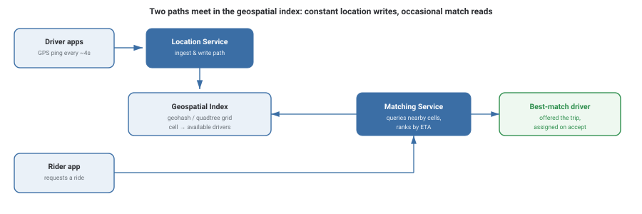

Design Uber
Design a ride-hailing service: riders request a trip, the system finds a nearby available driver, and both parties track the trip in real time. The core hard problem is geospatial — continuously tracking millions of moving drivers and being able to answer "who's nearby, right now?" in milliseconds.
Requirements
- Driver apps continuously report GPS location.
- Rider requests a trip; system matches them to a nearby available driver.
- Both parties see live location updates during the trip.
- Matching must happen in low hundreds of milliseconds — riders won't wait long for a match.
- Location data is high-volume and constantly changing — freshness matters more than perfect history.
- Must work correctly at city scale and be geographically partitionable (matching in Delhi never needs data from Tokyo).
Capacity Estimation
| Assumption | Value |
|---|---|
| Drivers online at peak | ~1 million |
| Location ping frequency | every ~4 seconds |
| Location update QPS | ~250,000 / sec |
| Ride requests per day | ~5 million |
| Match request QPS (average) | ~58 / sec |
| Location record size | ~50 bytes |
The ratio here is the whole story: location writes (~250K/sec) vastly outnumber match reads (~58/sec). The system has to be built primarily to absorb an enormous, continuous write firehose, with matching as a comparatively rare (but latency-critical) read against that data.
High-Level Design

A driver's location update is written into a geospatial index, geographically partitioned so a city (or region) is handled by servers responsible for that area. A rider's request queries that same index for drivers in nearby cells, ranks candidates by estimated time to reach the rider, and offers the trip to the best match.
Deep Dive
Geospatial indexing: geohash and quadtrees
A naive "find drivers within X km" query against raw lat/long coordinates requires scanning huge numbers of rows. Geohashing solves this by encoding a lat/long pair into a string where nearby locations share string prefixes — so "find drivers near me" becomes "find drivers whose geohash starts with this prefix," a fast, indexable lookup. A quadtree (recursively dividing the map into quadrants until each contains a small number of points) achieves something similar and adapts better to uneven driver density (dense in city centers, sparse in suburbs).
Why location data is partitioned geographically
A ride in Mumbai will never be matched with a driver in São Paulo, so there's no reason for those two cities' location data to live on the same servers or even be queried together. Partitioning the geospatial index by region (rather than, say, by driver ID) means each partition only has to handle the write and query load of its own city — a natural, load-proportional sharding key.
Matching and ranking
Once nearby available drivers are found via the geospatial index, they're ranked — not just by straight-line distance, but by estimated time to reach the rider (accounting for road networks and traffic), and the top candidate is offered the trip. If that driver doesn't accept within a short timeout, the system offers it to the next-best candidate.
Trade-offs
- Simple to implement, works well with standard key-value/database indexes.
- Grid cells are fixed-size, so density varies a lot between cells (city center vs. suburbs).
- Adapts cell size to actual driver density — more uniform load per cell.
- More complex to implement and to keep balanced as drivers move.
What interviewers are listening for: that you recognize this as fundamentally a geospatial indexing problem before jumping to generic "add a database" solutions, and that you can explain why geographic partitioning is the natural sharding key here.
If you're a fresher: explaining what a geohash is and why "nearby" queries need a spatial index (not a plain SQL WHERE clause on lat/long) is a strong starting answer.
If you're ~3 years in: you should be ready to discuss the write-heavy vs. read-light load profile, and how ranking by ETA (not just distance) changes the matching logic.
Interview Questions
Click a question to reveal the answer.
Why can't you just query "drivers within 2km" directly against a table of lat/long coordinates?
Raw lat/long values don't have a natural ordering that keeps nearby points close together in an index, so a "within X km" query would require scanning a large fraction of all rows and computing distance for each one — far too slow at millions of drivers. A geospatial index (geohash or quadtree) encodes location so that nearby points are also "nearby" in the index, turning the search into a fast prefix or range lookup instead of a full scan.
Why is geographic partitioning a natural fit for this system?
A rider in one city will only ever be matched with drivers in that same city (or a small surrounding area) — cross-region matches never happen. This means each geographic region's data can live on its own set of servers with no coordination needed between regions, giving close-to-linear scalability as new cities are added, unlike a sharding key that might require cross-shard queries.
Why does the system rank drivers by ETA instead of straight-line distance?
The closest driver in a straight line might be on the other side of a river with no direct bridge, or blocked by heavy traffic — straight-line distance doesn't reflect actual travel time. Ranking by estimated time to arrival (using real road networks and current traffic data) gives a much more accurate picture of which driver can genuinely reach the rider fastest.
What happens if the top-ranked driver doesn't accept the trip request?
The system waits a short timeout (a few seconds) for a response, and if the driver doesn't accept in time (or explicitly declines), the trip offer moves to the next-best candidate from the ranked list. This keeps the rider's wait time bounded without requiring every nearby driver to be asked simultaneously.